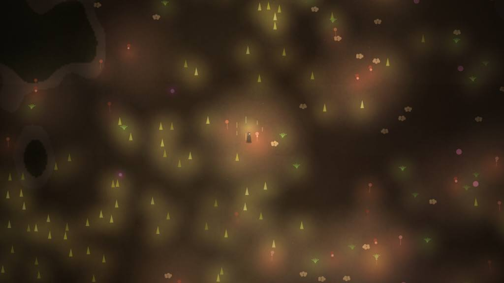
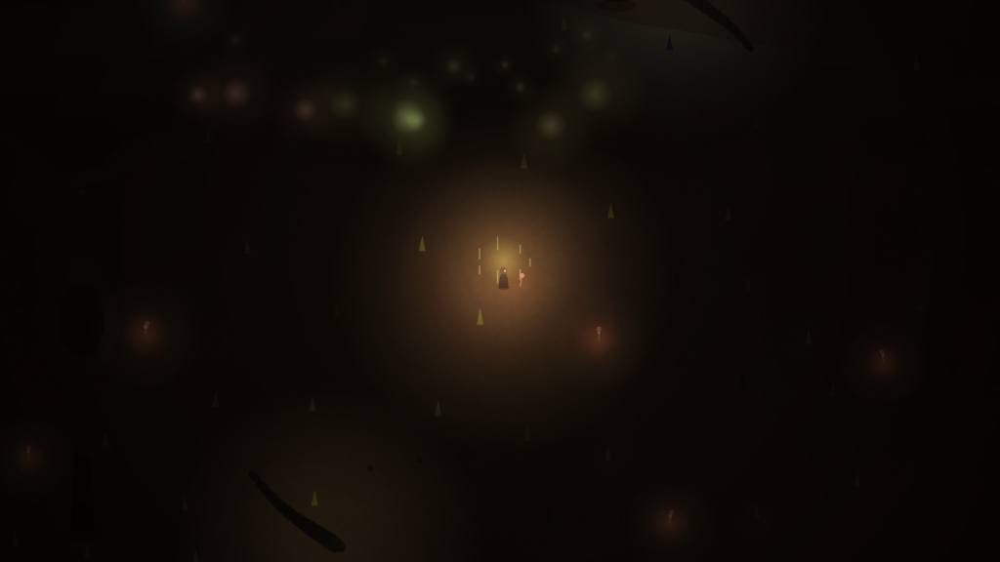
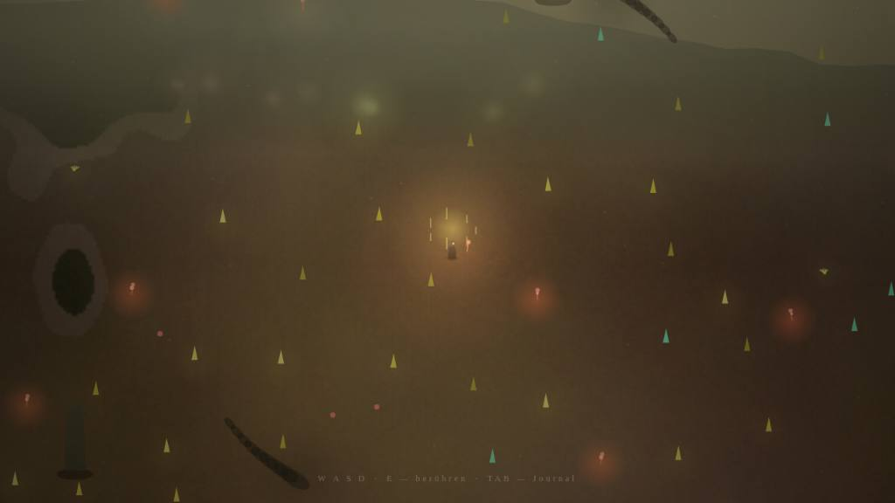
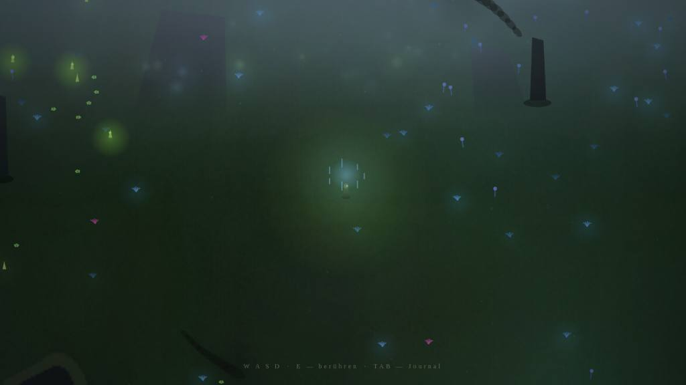
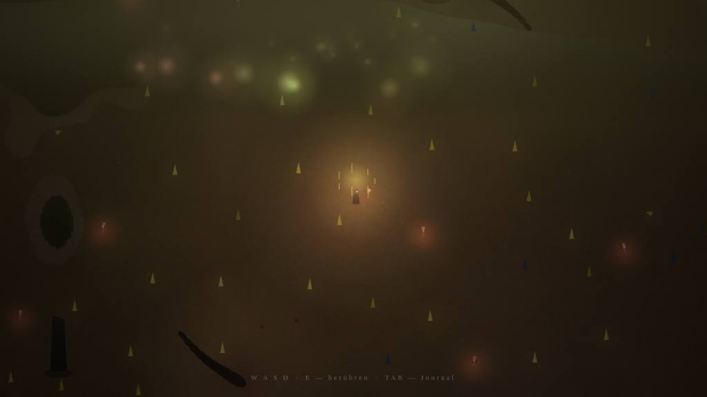
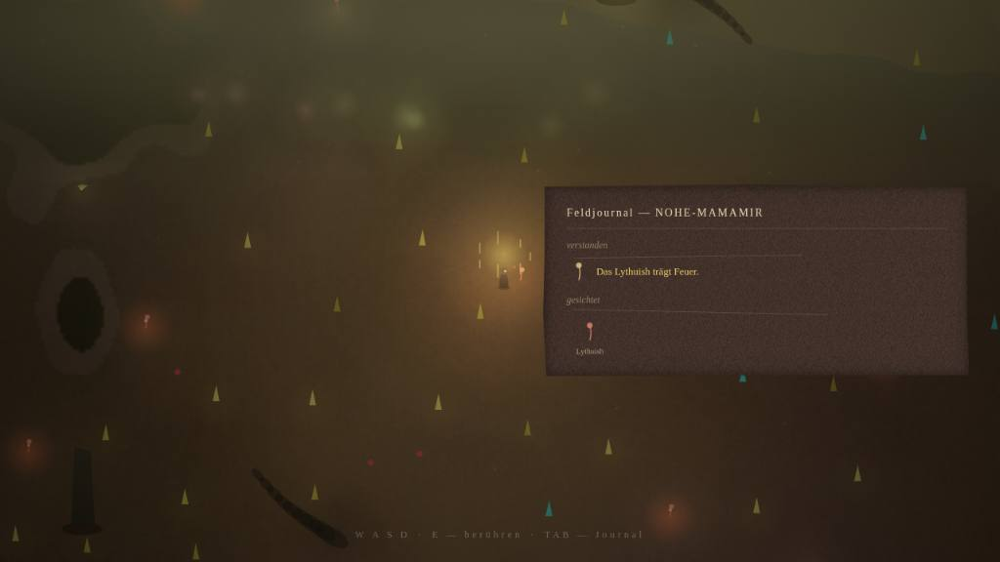

Das Spiel
Eine Welt, die niemand kennt — auch das Internet nicht
Terra Incognita ist ein Erkundungsspiel, in dem jede Welt andere Naturgesetze hat: Was pulsiert, brennt in der einen Welt und nährt in der anderen; Licht lockt hier die Jäger und vertreibt sie dort; manche Welten kehren nachts alle Wirkungen um. Nichts wird erklärt. Das Feldjournal schreibt nur auf, was du selbst gesehen hast — und wenn sich eine Vermutung zum zweiten Mal bestätigt, kristallisiert sie zu einem Gesetz.
Das Zielgefühl, an dem jede Runde gemessen wurde: Ich bin der erste Mensch, der diese Welt versteht.
Die Bar
Blind gegen Outer Wilds und Subnautica
Jeder Kritiker startete mit frischem Kontext, machte eigene Screenshots und verglich sie blind gegen fünf konkrete Referenz-Stills: das Lagerfeuer auf Timber Hearth, den Blick in Brittle Hollows Kern, den Abstieg in die Blood-Kelp-Zone, den ersten Reaper im Nebel, den Grand Reef. Diese Bar taugt, weil beide Spiele dem Zielgefühl am nächsten kommen, unser Kernkonzept — pro Welt divergente Regeln — aber nicht besitzen: gemessen wird das Gefühl, nicht kopierbare Features. Ab 8 von 10 gilt: Ein blinder Juror könnte unser Bild dem Original vorziehen.
Runde 1 → Runde 4
Dieselbe Nacht, vier Runden später


Stand
Score-Verlauf gegen die Bar
| Bereich | Verlauf | Schlussjuror |
|---|---|---|
| Bewegung & Kamera | 5 → 7 → 8 ✦ | „Ja, knapp: Die Ein-Uhr-Kohärenz von Bob, Sway, Fußfall-Kamera und Step-Sound erreicht Outer-Wilds-Handwerksniveau — nichts ruckt." |
| Klang der Leere | 4 → 6 → 8 ✦ | „Knapp ja — das atmende, seed-divergente Bett und die dreifach eingesetzte Stille tragen das Leere-Gefühl der Referenzen." |
| Erkenntnis-Moment | 4 → 6 → 8 ✦ | „Die Kristallisation ist warm, kurz und verdient: Stille → Motiv → Tinten-Reveal. Das Journal liest als Handschrift, nicht als UI." |
| Weltregeln & Gefahr | 4 → 5 → 7 → 7.5 | „Echtes Mysterium, Jäger vorbildlich UI-frei als Reaper-Grammatik — die Silhouette stand im Still noch angeschnitten." Nach Juror-Vorgabe geschlossen. |
| Atmosphäre | 3 → 5 → 7 → 7 | „Die Nächte tragen das Zielgefühl fast auf Bar-Niveau — bei Tag fehlte der Silhouette der Tonwert-Abstand." Nach Juror-Vorgabe geschlossen. |
Die Runden
Was die Kritiker sahen — und was daraus wurde
Atmosphäre
Danach: echte Dunkelheit (0.88–0.97, pro Seed divergent), ein Nacht-Lichtbudget von drei dominanten Lichtern neben dem Spieler, Dämmerung als eigener Akt, seed-gebundene Hell-/Dunkelzonen am Tag, drei Nebelschichten mit Bänken — und in Runde 4 ein Horizont mit einem großen, unerreichbaren Ding pro Welt: Bergrücken in VELT, Monolith-Kolosse in ORUN, davor und dahinter ferne Leucht-Cluster in zwei Distanzstufen.
Weltregeln & Gefahr als Silhouette
Danach: ein gegliederter Sechs-Segment-Körper auf Positions-Trail, der sein Opfer erst minutenlang beschattet; Wächter, die einen Territorial-Ring um den Schrein patrouillieren, sodass die ferne Silhouette im Nebel schon am Spawn lesbar ist; Gefahr-Flora, die isoliert wächst (der leere Ring um jede Gefahr ist selbst das Telegraph); Zwillings-Arten, die das Nacht-Umkehr-Gesetz sichtbar machen.
Bewegung & Kamera
Danach: asymptotische Beschleunigung, Ausgleiten statt Stopp, eine Kamera, die mit dem Fokus atmet (Stillstehen atmet tiefer und langsamer), Fußfall, Körper-Bob und Schritt-Klang auf einer gemeinsamen Uhr — kein einziger Sprungpfad mehr im System.
Klang der Leere
Danach: Böen und Drone-Schwell auf Minuten-Perioden, ein Sub-Drone, der nachts aufzieht, während der Tiefpass sich schließt; Stimmführung, die über Minuten durch die Seed-Skala gleitet; Entdeckung und Monolith von echter Stille gerahmt; jedes Ereignis der Welt-Tonalität entnommen.
Erkenntnis-Moment
Danach: Vermutungen enden offen („Das Lythuish …?"), das Verb erscheint erst im Moment der Kristallisation — Stille, dann das Motiv, dann der Tinten-Reveal mit Gold-Hierarchie. Das Journal ist warmes, opakes Papier mit Glyphen-Handschrift, das den Blick besitzt, statt in der Ecke zu hängen.
Galerie
Zwei Seeds, zwei Naturen




Der Loop
Builder bauen, Kritiker urteilen — nie dieselbe Person
Jeder Teilbereich durchlief Paare aus Builder und Kritiker mit frischem Kontext. Der Kritiker sah nur das echte Ergebnis und die Bar, benannte die eine größte Lücke und schickte den Bereich zurück. Kein Bereich wurde für fertig erklärt, solange ein frischer Juror die Bar verfehlt sah.
Selbst spielen:
git clone -b claude/game-design-gauntlet-loop-xqqtv7 https://github.com/Lordbabo069/Lordbabo069.git
cd Lordbabo069 && python3 -m http.server 8000 --directory game → http://localhost:8000
W A S D bewegen · E berühren · TAB Journal · Stillstehen weitet die Wahrnehmung. Jede URL mit ?seed=DEINWORT ist eine eigene Welt mit eigenen Gesetzen.